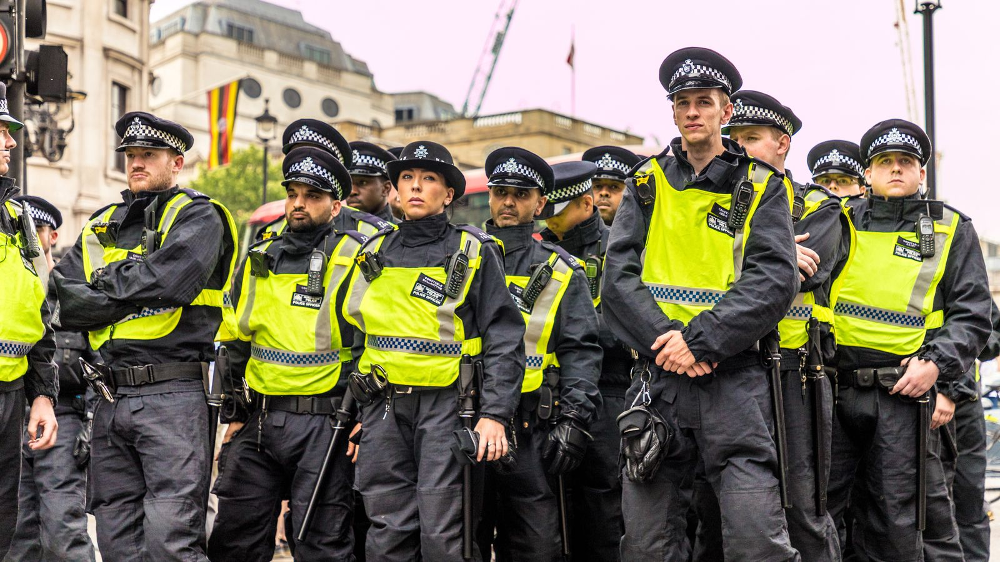

Catching Criminals on Camera: UK Police Cases Solved with CCTV
Since its introduction in the 1990s, Closed-Circuit Television (CCTV) has become a valuable tool for the UK police in solving crimes. These cameras capture footage in public spaces and private properties, providing crucial evidence that helps identify and apprehend criminals.
Landmark Cases Solved with CCTV
The 1990s: The Murder of James Bulger (1993)
The horrific murder of two-year-old James Bulger in 1993 shocked the nation. Grainy CCTV footage from a shopping center captured the boys leading James away, leading to their identification and conviction.
The 2000s: The 7/7 London Bombings (2005)
The coordinated terrorist attacks on the London transport system in 2005 resulted in 52 fatalities and hundreds of injuries. CCTV footage from various locations played a crucial role in piecing together the attackers' movements and identifying them.
The 2010s: The Croydon Tram Crash (2016)
A tram derailed at Croydon tram stop in 2016, causing seven fatalities and injuring several others. CCTV footage helped investigators understand the cause of the crash and identify those responsible.
The 2020s: Ongoing Crime Deterrence & Evidence Gathering
Today, CCTV remains a vital tool for UK police forces. The widespread use of high-definition cameras deters crime, helps identify suspects, and provides evidence for prosecutions. It's important to note there are ongoing discussions about balancing security needs with privacy concerns.
These are just a few examples of how CCTV has aided UK police in solving major crimes. The technology continues to evolve, offering even greater potential for crime prevention and investigation.